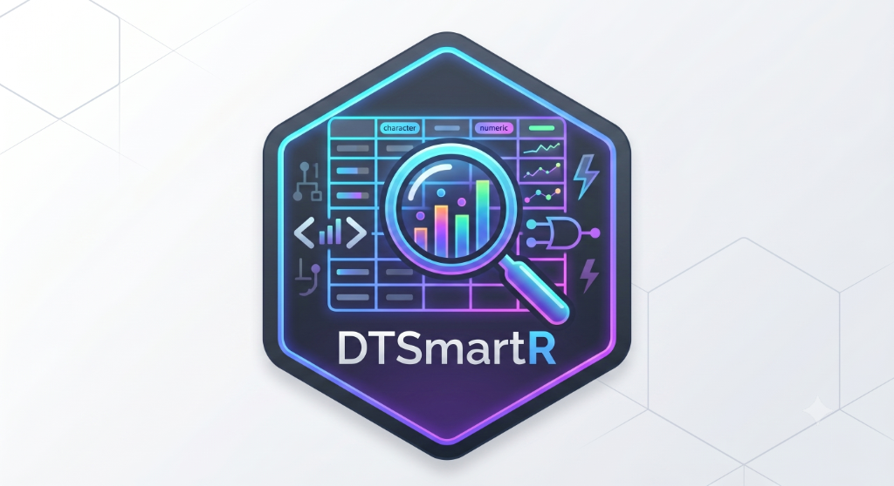

Launch the dtsmartr Data Explorer in your default Web Browser
Source:R/dtsmartr_launch.R
dtsmartr_launch.RdLaunches a temporary, lightweight Shiny server in the background and opens the
interactive grid in your default external web browser. This bypasses local
browser origin security policies (CORS) that block file:// resources.
Usage
dtsmartr_launch(data = NULL, port = NULL, options = dtsmartr_options())Arguments
- data
A
data.frameto explore, orNULL(default) to launch the Zero-Code Data Ingestion Wizard.- port
Optional port number. If
NULL(default), a free port is chosen automatically.- options
Named list of UI options generated by
dtsmartr_options().
Value
No return value, called for the side effect of starting a local background Shiny application and opening it in the default web browser.
Details
Zero-Code Ingestion Wizard (Wizard Mode)
When data = NULL (default), the Shiny server boots into Wizard Mode. An
interactive interface (powered by the datamods package) allows users to
upload local files (CSV, Excel, SAS, RDS). It also features direct "View"
and "Update" panels to verify and customize columns or variable classes
before loading.
Once a file is successfully uploaded and confirmed, the wizard parses the dataset and feeds it directly into the React-powered virtualized grid explorer.
Examples
if (interactive()) {
# 1. Launch wizard mode to upload local files
dtsmartr_launch()
# 2. Launch directly with a dataset
dtsmartr_launch(mtcars)
}